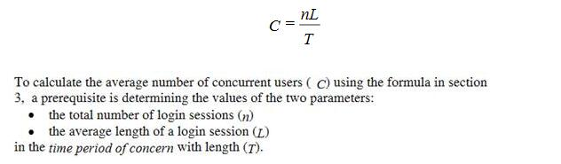
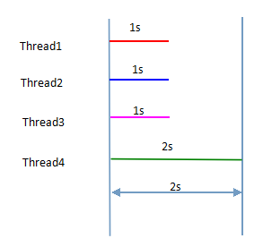
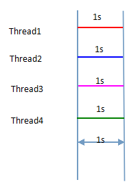
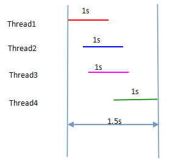

在操作系统中，并发是指一个时间段中有几个程序都处于已启动运行到运行完毕之间，且这几个程序都是在同一个处理机上运行，但任一个时刻点上只有一个程序在处理机上运行。
并发量
一、基础
TPS(Transactions Per Second)：每秒事务数
QPS(Query Per Second)：每秒请求数，QPS其实是衡量吞吐量的一个常用指标，就是说服务器在一秒的时间内处理了多少个请求。
方式一：二八定律
- 原理：每天80%的访问集中在20%的时间里，这20%时间叫做峰值时间
- 公式：( 总PV数 * 80% ) / ( 每天秒数 * 20% ) = 峰值时间每秒请求数(QPS)
- 峰值时间每秒QPS / 单台机器的QPS = 需要的机器
方式二：统计访问日志access.log
cat access.log| grep 'GET /'|cut -d ' ' -f4 |uniq -c |sort -n -r- 假设日志内容如下
1
2
3
4
5
6
7127.0.0.1 - - [08/May/2017:10:03:30 +0800] "GET /server.php HTTP/1.1" 200 1835 "http://localhost" "Mozilla/5.0 (Macintosh; Intel Mac OS X 10_15_7) AppleWebKit/537.36 (KHTML, like Gecko) Chrome/90.0.4430.93 Safari/537.36" "-"
127.0.0.1 - - [08/May/2017:10:03:30 +0800] "GET /index.php HTTP/1.1" 200 1835 "http://localhost" "Mozilla/5.0 (Macintosh; Intel Mac OS X 10_15_7) AppleWebKit/537.36 (KHTML, like Gecko) Chrome/90.0.4430.93 Safari/537.36" "-"
127.0.0.1 - - [08/May/2017:10:05:30 +0800] "GET /run.php HTTP/1.1" 200 1835 "http://localhost" "Mozilla/5.0 (Macintosh; Intel Mac OS X 10_15_7) AppleWebKit/537.36 (KHTML, like Gecko) Chrome/90.0.4430.93 Safari/537.36" "-"
127.0.0.1 - - [08/May/2017:10:07:30 +0800] "GET /server.php HTTP/1.1" 200 1835 "http://localhost" "Mozilla/5.0 (Macintosh; Intel Mac OS X 10_15_7) AppleWebKit/537.36 (KHTML, like Gecko) Chrome/90.0.4430.93 Safari/537.36" "-"
127.0.0.1 - - [08/May/2017:11:07:30 +0800] "GET /main.php HTTP/1.1" 200 1835 "http://localhost" "Mozilla/5.0 (Macintosh; Intel Mac OS X 10_15_7) AppleWebKit/537.36 (KHTML, like Gecko) Chrome/90.0.4430.93 Safari/537.36" "-"
127.0.0.1 - - [07/May/2017:11:09:31 +0800] "GET /public/index.php HTTP/1.1" 200 2298784 "-" "Mozilla/5.0 (Macintosh; Intel Mac OS X 10_15_7) AppleWebKit/537.36 (KHTML, like Gecko) Chrome/90.0.4430.93 Safari/537.36" "-"
127.0.0.1 - - [07/May/2017:11:09:31 +0800] "GET /public/index.php HTTP/1.1" 200 2298784 "-" "Mozilla/5.0 (Macintosh; Intel Mac OS X 10_15_7) AppleWebKit/537.36 (KHTML, like Gecko) Chrome/90.0.4430.93 Safari/537.36" "-"方式三：产品和运营统计，通过日活、在线、总用户等估算
- 根据订单量回放再乘以放大系数，放大系数自己吃不准就想办法找竞品要
方式四：完全凭个人经验，常用且已知的经验型数据如日志QPS在6-10w，RPC的QPS在10W，Redis的QPS是8-10w，MySQL大致6k-1W。
方式五：根据点击流测算，点击流配合转化率算出来也是准的
并发数(Concurrency)：指系统同时能处理的请求数量，这个也是反应了系统的负载能力。

- C：并发数
- n：压测时间段内所有的请求数
- L：平均响应时间
- T：压测总时长
吐吞量(Throughput)：指系统在单位时间内处理请求的数量。
- 公式1： 吞吐量 = 并发数 / 平均响应时间
- 公式2： 吞吐量 = 请求总数 / 总时长
1
2
3
4
5
6>从`C = nL / T`推导：
并发 = 请求总数 * 平均响应时间 / 总时长
⏬
并发 / 平均响应时间 = 请求总数 / 总时长
⏬
公式1 = 公式2响应时间RT(Response Time)：响应时间是指系统对请求作出响应的时间，一般取平均响应时间
- QPS(TPS) = 并发数 / 平均响应时间
- 并发数 = QPS * 平均响应时间
PV(Page View)：页面访问量，即页面浏览量或点击量，用户每次刷新即被计算一次
UV(Unique Visitor)：独立访客，统计1天内访问某站点的用户数(以cookie为依据)
DAU(Daily Active User)日活跃用户数量，常用于反映网站、互联网应用或网络游戏的运营情况。
- DAU通常统计一日（统计日）之内，登录或使用了某个产品的用户数（去除重复登录的用户），这与流量统计工具里的访客（UV）概念相似。
MAU(monthly active users)月活跃用户人数，是一个用户数量统计名词，指网站、app等月活跃用户数量（去除重复用户数）。
- 数量的大小反映用户的活跃度，但是无法反映用户的粘性。
二、计算
- 第一组模型：一共有4个线程，同时发了4笔请求，其中3笔耗时1s，一笔耗时2s，整个过程一共耗时2s。

1 | 公式1： |
- 第二组模型：一共有4个线程，同时发了4笔请求，4笔请求耗时均为1s，1s内全部发送完毕。

1 | 公式1： |
- 第三组模型：一共有4个线程，4笔请求耗时均为1s，但线程发送出现不同步现象，一共持续1.5s完成全部：

1 | 公式1： |
nginx访问量统计
- 根据访问IP统计UV
awk '{print $1}' access.log|sort | uniq -c |wc -l - 统计访问URL统计PV
awk '{print $7}' access.log|wc -l - 查询访问最频繁的URL
awk '{print $7}' access.log|sort | uniq -c |sort -n -k 1 -r|more - 查询访问最频繁的IP
awk '{print $1}' access.log|sort | uniq -c |sort -n -k 1 -r|more - 根据时间段统计查看日志
cat access.log| sed -n '/14\/Mar\/2015:21/,/14\/Mar\/2015:22/p'|more
- 根据访问IP统计UV
二八定律应用
1 | 每天300w PV的在单台机器上，这台机器需要多少QPS？ |
三、参考
QPS计算
上面「并发量」讲的是概念与推导，这一节讲工程上怎么把 QPS 真的算出来：先对齐口径，再分五条路取数——公式估算、监控工具、流式框架、网关日志、压测实测，最后交叉验证。
1. 先对齐口径
QPS 本身没有歧义，有歧义的是”谁的 QPS、在哪一层算、含不含内部调用”。
| 指标 | 定义 | 单位 | 取数位置 | 常见误用 |
|---|---|---|---|---|
| QPS | 每秒查询/请求数 | 次/秒 | 网关、接入层、服务入口 | 拿单次采样当峰值 |
| TPS | 每秒完整事务数（一个事务可能含多次查询） | 笔/秒 | 业务埋点、压测报告 | 与 QPS 混用当同一指标 |
| 并发数 | 同一时刻正在处理中的请求数 | 个 | ss/netstat、Active connections、线程池活跃数 |
把”线程数”当并发数 |
| RT | 单次请求耗时，通常看均值 + P95/P99 | 秒（算 QPS 时必须用秒） | 应用、网关 $request_time |
用毫秒直接除，结果差 1000 倍 |
| 吞吐量 | 单位时间处理量（请求或字节） | 次/秒、MB/s | 同上 | 与 QPS 完全等价（不含字节维度时） |
三条必须先立住的规矩：
- QPS 是速率，必须有时间窗口。
rate(x[1m])、请求数/60、按秒聚合日志，都行；单点计数不叫 QPS。 - 分母统一到秒。平均 RT 是 120ms，就要写成 0.12s，否则算出来放大 1000 倍。
- 分清入口 QPS 与后端 QPS。入口一层请求进来，后面可能 fan-out 成 N 次 RPC/缓存/DB 访问——这就是”放大倍数”（也叫扇出系数），压容量时按后端最热的那条链路算。
2. 公式法（估算，做容量规划最快）
2.1 QPS = 总查询数 / 总时间
窗口法，最朴素也最可靠，只要有计数就能算：
1 | QPS = Δcount / Δt |
- 采集点：网关请求数、应用埋点计数器、DB
Questions、Redistotal_commands_processed。 - 时间窗按用途选：秒级看瞬时峰值，分钟级看常态，小时级看出趋势。窗口越短越敏感但越抖。
- 坑：跨越窗口重启/重置会算出负数，取两次采样差值时先判断计数器是否归零。
2.2 QPS = 并发数 / 平均响应时间
即 Little 定律的工程形式：吞吐 = 并发 / RT。它把”有多少人在同时等”换算成”每秒能出多少结果”。
- 并发数（C）与 RT（L，单位秒）、QPS 三者互为约束：
C = QPS × L。 - 反过来最有用的形式：已知 QPS 和 RT，就能反推需要多少并发，直接决定线程池、连接池、Tomcat
maxThreads、PHP-FPMpm.max_children的大小。 - 坑：这里的 RT 要用加权平均且包含排队时间；只用”业务代码执行时间”会算高。P95 与均值差得越远，说明尾延迟越拖容量。
例：入口 QPS 2000，平均 RT 0.05s（50ms），则需要支撑的并发 ≈ 2000 × 0.05 = 100；若 RT 抖动到 0.3s，同样的 QPS 就要 600 并发，线程池按 100 配就必然排队。
2.3 QPS = (总PV × 80%) / (总时间 × 20%)（二八定律峰值估算）
没有监控数据时用它拍峰值：
1 | 峰值QPS = 总PV × 0.8 / (86400 × 0.2) = 总PV / 21600 |
（86400 = 一天的秒数；总PV / 21600 是它的简化式，可以心算。）
- 适用：日常流量、有明显早晚高峰的站点。
- 不适用：大促/秒杀/直播开场——那种流量不是”二八”，是”尖峰脉冲”，必须用压测或历史峰值实测。
- 修正：把 80%/20% 换成你业务的真实分位。有监控就用 2.1 直接从历史数据取
max(秒级QPS)，比二八定律准得多。
2.4 三个公式的适用边界
| 公式 | 本质 | 什么时候用 | 精度 | 主要误差来源 |
|---|---|---|---|---|
| 总查询数/总时间 | 计数差分 | 有计数、有监控 | 高 | 窗口选择、计数器重置 |
| 并发数/平均RT | Little 定律 | 有 RT 与并发数据、反推容量 | 中 | 均值掩盖长尾、RT 口径不一致 |
| PV × 80% / (时间 × 20%) | 峰值假设 | 无数据、早期规划 | 低 | 业务分布不符合二八 |
3. 工具法：Prometheus + Grafana
监控体系是拿 QPS 最标准的方式，关键是埋对指标再加一层 rate()。
3.1 指标与 PromQL
1 | # 入口总 QPS（1 分钟滑动窗口） |
要点：
- 用
rate()而不是increase()画 QPS 曲线；rate自动按窗口秒数归一，跨抓取间隔也稳。 - counter 必须单调递增，重启归零会导致
rate()出现负值跳变，用resets()或换increase兜一下。 - 采集间隔（
scrape_interval）决定能看多细的峰值：15s 间隔看不出 1s 的尖刺，真要抓峰值就在网关侧做秒级聚合后再暴露。 - Grafana 只负责展示，别在 Grafana 里做聚合计算——面板刷新粒度与告警口径会打架。告警阈值用
record rule预先算好。
3.2 常配的 exporter / 指标源
| 层面 | 指标源 | 关键指标 |
|---|---|---|
| Nginx | nginx-prometheus-exporter + 自建日志指标 |
nginx_http_requests_total、Active connections |
| 应用 | 埋点 counter / histogram | 请求总数、RT 分位、线程池活跃数 |
| JVM | jmx_exporter |
tomcat_threads_busy、GC 时间 |
| MySQL | mysqld_exporter |
Questions、Threads_connected、慢查询 |
| Redis | redis_exporter |
commands_processed_total、connected_clients |
4. 工具法：ELK Stack（日志聚合算 QPS 与 UV）
适合事后统计：已知日志、要出报表、要按 URL/UA/地区多维下钻，或者补历史数据。
- 链路：Filebeat 采集 → Logstash 解析（
grok切 access.log 或 JSON 埋点）→ Elasticsearch 存储 → Kibana 展示。 - 在 Kibana 里用
date_histogram，interval: 1s就是秒级 QPS 曲线；interval: 1m看常态。 - UV 用
cardinality聚合（近似去重），量大时按天分桶再合并。 - 坑：ELK 是写多读慢的存储，秒级长周期查询很吃资源；实时大屏别直接压在 ES 上，用预聚合索引（按分钟 rollup）或走第 5 节的流式框架。
5. 工具法：Service Mesh（Istio 侧观测）
在服务网格里，所有东西向流量都过 sidecar，天然是”最贴近服务粒度的 QPS 观测点”，比网关更细、比应用埋点更统一。
1 | # 网格内每个服务的 QPS |
价值：
- 不用改代码就能拿到全链路指标，新服务接入即被观测。
- 能同时看到入口 QPS 与被调用 QPS，扇出倍数一目了然（同一个入口请求在下游被拆成几次调用）。
- 代价是 sidecar 自身的资源开销与延迟，指标延迟通常在秒级，适合做容量面板而非秒杀级实时决策。
6. 框架法：Flink / Spark Streaming（流式实时统计）
日志/埋点是一条流时，用流式计算做秒级、分钟级聚合，比”存下来再查”快得多，也扛得住高吞吐。
Apache Flink（事件时间窗口 + 精确一次）：
1 | -- 秒级 QPS：按接口分组、1 秒滚动窗口 |
- 水位线（watermark）决定延迟与乱序容忍，日志有延迟就别用太紧的窗口。
- UV 用
HLL（HyperLogLog）或BITMAP去重，别COUNT(DISTINCT)——状态会爆。 - 结果写回 Redis/PG/ClickHouse，Grafana 直接读，形成”日志 → 实时 QPS 面板”闭环。
Spark Streaming / Structured Streaming（微批，秒级延迟够用）：
1 | val qps = logs |
- 微批间隔（
trigger）就是最小观测粒度，5s 批就别指望看到 1s 尖刺。 - 与 Flink 的取舍：要亚秒级与状态复杂选 Flink；已有 Spark 体系、批流一体选 Structured Streaming。
7. 网关法：Nginx（零成本的第一手数据）
线上一定有 Nginx，它是最便宜的 QPS 数据源。
7.1 stub_status 两次采样
1 | location /nginx_status { |
1 | # 输出：Active connections / accepts / handled / requests |
Active connections就是当前并发连接数，与QPS × RT互为印证。requests是累计值，只增不减，适合做 2.1 的窗口法。
7.2 access.log 聚合（历史回放与峰值定位）
1 | # 秒级 QPS 峰值 Top10（$4 是 [08/May/2017:10:03:30 形式的本地时间） |
配套的 log_format（关键字段别漏，否则事后无法算 RT 与上游耗时）：
1 | log_format main '$remote_addr - $remote_user [$time_local] "$request" ' |
$request_time是 Nginx 视角的完整耗时（含排队与上游），$upstream_response_time只看上游——两者差值大，说明卡在 Nginx 自身或客户端慢。- 限流参数要和 QPS 口径对齐：
limit_req zone=x rate=100r/s限制的是单 IP 速率，别误读成全站 QPS；limit_conn限的是并发连接，对应第 1 节的并发数。
8. 压测法：JMeter / LoadRunner（唯一能拿到”上限”的方式）
公式与监控只能告诉你”现在多少”，压测才能告诉你”最多多少”以及”从哪开始崩”。
读哪个数：
- JMeter 看 Aggregate Report 里的
Throughput（单位 请求/秒，含所有采样器）；要看事务粒度就加 Transaction Controller，再用TPS口径。 - LoadRunner 看 Average Transaction Response Time 与 TPS 曲线，重点看 TPS 拐点与错误率上升的时点。
- 无论如何，压测 QPS = 成功请求数 / 有效压测时长，失败请求不能算进吞吐。
参数怎么配：
| 参数 | 建议 | 原因 |
|---|---|---|
| 线程数（并发） | 从目标 QPS × RT 起步，再阶梯加压 | 并发不够压不出上限 |
| ramp-up | 30–60s 渐进，别 1s 起满 | 避免瞬间冲击造成假拐点 |
| duration | 至少 10–15 分钟稳态 | 短测掩盖 GC、连接回收、缓存失效 |
| 思考时间 | 模拟真实用户时保留；找容量上限时去掉 | 两者测的不是同一个数 |
| keep-alive | 与线上一致 | 长连接与否差一个数量级的握手开销 |
找拐点：用 Stepping Thread Group / Concurrency Thread Group 阶梯加压，观察 TPS 停止上升而 RT 开始线性上涨的那个点，就是容量上限（Knee Point）；再乘以安全系数（一般取 0.6–0.8）作为规划值。
常用补充工具：
1 | # wrk：高并发 HTTP 压测，直接给 Requests/sec |
坑：压测机的网卡、端口耗尽（TIME_WAIT 堆积）、JVM 预热、压测数据量级与线上不一致，都会让结果偏低或偏高；压测 QPS 与线上 QPS 不能直接等同，要按”入口请求数 × 扇出倍数 × 缓存命中率差异”折算。
9. 五条路交叉验证（实例走一遍）
假设：日 PV 300 万，Nginx 日志可查，入口 QPS 想知道。
| 方法 | 取数 | 结果 | 说明 |
|---|---|---|---|
| 公式（二八） | 300w × 0.8 / (86400 × 0.2) | ≈ 139 QPS | 无监控时的初估值 |
| 日志聚合 | substr($4,2) 按秒 Top1 |
实测峰值（可能 300–500） | 真实峰值，通常高于二八估算 |
| Prometheus | max_over_time(rate(...)[30d:1m]) |
与日志一致即可互证 | 一致性检查最有效 |
| Little 定律 | 峰值 QPS × P95 RT | 需要的并发/线程数 | 用于配线程池、连接池 |
| 压测 | wrk/JMeter 阶梯加压 | 单机容量上限 | 与峰值比，得出余量与机器数 |
一致性判据（任一不吻合就去查口径）：
- 入口 QPS ≈ 各后端服务 QPS × 扇出倍数；
并发数 ≈ QPS × RT，与Active connections、线程池活跃数对得上；QPS × 平均响应体大小≈ 出口带宽（对不上说明压缩/缓存或日志统计漏了静态资源）。
10. 常见坑清单
- 毫秒当秒：RT 120ms 直接除，结果放大 1000 倍。
- 线程数当并发：线程数上限只是天花板，真正在处理的才是并发。
- 均值掩盖长尾：平均 RT 50ms、P99 800ms，按均值算容量会在高峰期崩。
- 窗口选错：1 秒窗口抖得没法看，1 小时窗口把秒杀尖峰抹平。
- 含静态资源：CDN 回源的图片请求会把 QPS 抬高一个量级，统计前先过滤。
- 内部调用重复计入：同一请求在 Nginx、网关、服务、DB 都被记一次，跨层相加就是重复计算。
- 计数器重置：凌晨重启、日志切割后
rate()出现负跳变。 - 压测环境缺东西：单机压测没有缓存、没有真实数据分布，压出来的 QPS 往往偏乐观。
- 只算均值不算成本：QPS 达标但 CPU 打满、连接数耗尽，实际上限比数字低。